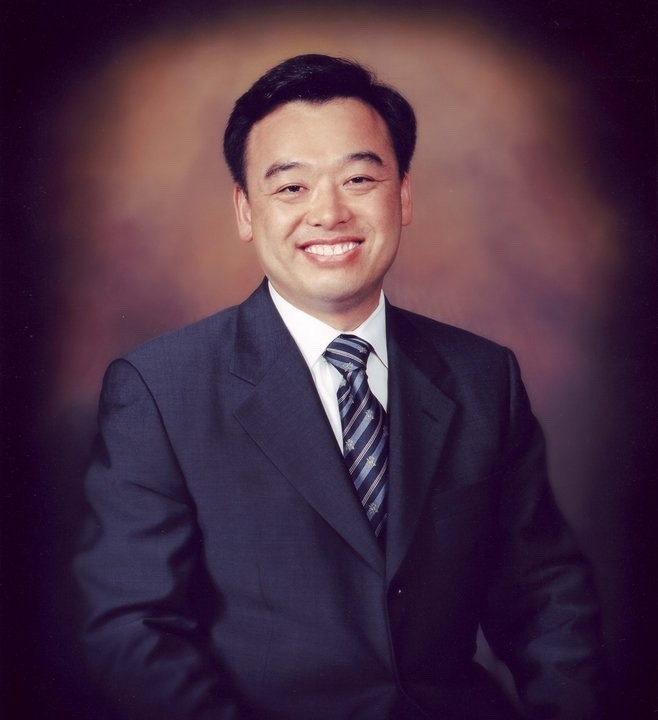
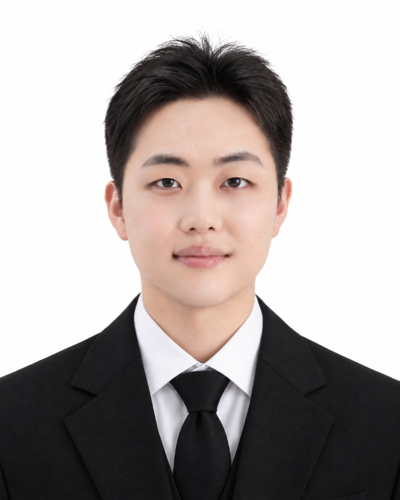

한국 청교도 연구소
성경의 절대적 권위와 개혁주의 신앙 전통 위에서 청교도 신학과 목회적 유산을 섬깁니다.
연구소 소개
한국 청교도 연구소는 성경의 절대적 권위와 하나님의 주권을 중심으로 한 개혁주의 신앙 전통 위에서, 청교도들의 신학과 경건, 그리고 목회적 유산을 연구하고 소개하기 위해 설립되었습니다.
청교도들은 단순한 과거의 신학자들이 아니라, 말씀에 의해 형성된 삶을 추구했던 신앙의 증인들이었습니다. 그들은 교리와 삶, 신학과 경건, 공적 예배와 개인의 신앙을 분리하지 않았으며, 오직 하나님의 영광(Soli Deo Gloria)을 목적으로 교회와 성도의 삶을 개혁하고자 했습니다.
본 연구소는 청교도들의 설교, 신학 저작, 경건 문헌들을 번역·소개하고, 그 신학적 깊이와 목회적 통찰을 오늘의 한국 교회와 성도들에게 바르게 전달하고자 합니다.
우리는 청교도 신학이 단지 학문적 연구의 대상이 아니라, 오늘날에도 교회를 새롭게 하고 성도를 거룩으로 이끄는 살아 있는 유산임을 확신합니다.
한국 청교도 연구소는 웨스트민스터 신앙고백과 대·소요리문답으로 대표되는 개혁주의 신앙 고백 전통을 존중하며, 성경 중심적 설교, 언약 신학, 구원의 은혜 교리, 성화와 경건의 균형을 강조합니다.
우리는 새로운 것을 만들어내기보다, 이미 하나님께서 교회를 위해 허락하신 신실한 신앙의 유산을 다시 발견하고 충실히 계승하는 일에 헌신하고자 합니다. 오직 성경으로 돌아가고, 성경이 가르치는 바른 교리와 거룩한 삶을 회복하기를 소망합니다.
섬기는 사람들
사역자 프로필
김홍만
한국청교도연구소 소장- Seokyeong University | Seoul, South Korea (BA)
- Chongshin Theological Seminary | Seoul, South Korea (M. Div.)
- Alliance Theological Seminary (MPS)
- Reformed Theological Seminary (D. Miss.)
배가현
전도사- Southwestern Reformed Seminary (M.Div)
- 유튜브 <kei is loved>
- Puritan Heritage Books 간사
- 한국 청교도 연구소 전도사

이수민
간사- B.A. in Theology, Korea Baptist Theological University
- M.Div. Candidate, Southwestern Reformed Seminary
- Puritan Heritage Books 실장
- 한국청교도연구소 간사